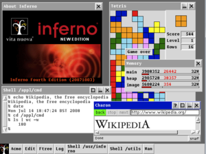

His Contributions
Unix (operating system)
Unix is a type of computer operating system. Multitasking and multi-user features are supported. Unix is the most extensively used for operating system on all types of computers, including desktops, laptops, and servers. Unix has a graphical user interface (GUI) that is comparable to Windows and allows for easy navigation and support of the environment.
B (programming language)
B is a programming language that was created in 1969 at Bell Labs. Ken Thompson and Dennis Ritchie came up with the idea. B is a short form of BCPL, and its name might be a contraction of BCPL. Dennis Ritchie, Thompson's coworker, thought that the term was derived from Bon, an earlier but unrelated programming language that Thompson created for use on Multics.
Belle (chess machine)
Joe Condon and Ken Thompson of Bell Labs created Belle, a chess computer. With a USCF rating of 2250, it was the first machine to attain professional play in 1983. It won the 1980 World Computer Chess Championship and the ACM North American Computer Chess Championship five times.

UTF-8
UTF-8 is a character encoding with variable widths that is used in electronic communication. The term is taken from Unicode Transformation Format – 8-bit, as defined by the Unicode Standard. With one to four one-byte code units, UTF-8 can encode all 1,112,064 valid Unicode character code points.

Plan 9 (operating system)
Plan 9 is a distributed operating system which allows a network of diverse and geographically dispersed computers to work together as a single system. Users work at terminals running the rio window system, and they have access to CPU servers that perform computation-intensive operations in a typical Plan 9 installation.
Inferno (operating system)
Inferno is a distributed operating system that originated at Bell Labs and is presently developed and maintained as free software by Vita Nuova Holdings. Inferno was developed using Bell Labs' Plan 9 knowledge as well as further research on operating systems, languages, on-the-fly compilers, graphics, security, networking, and portability. Dante Alighieri's Divine Comedy inspired the name of the operating system and several of its associated products, as well as the present firm. Inferno is the Italian word for "hell," and there are nine circles in Dante's Divine Comedy.

grep (operating system command)
grep is a command-line tool for looking for lines that match a regular expression in plain-text data sets. It gets its name from the ed command g/re/p, which accomplishes the very same thing. grep was created for the Unix operating system, but it is now accessible for all Unix-like systems as well as certain other operating systems like as OS-9.
Endgame tablebase (computerized database)
A computerized database containing pre-calculated thorough analyses of the final position in chess called a final table. Typically, it is played with a computer chess or a person or computer that examines a game previously played retroactively.
Go (Programming language)
Robert Griesemer, Rob Pike, and Ken Thompson created Go, a statically typed, compiled programming language at Google. Go is comparable to C in syntax but adds memory safety, garbage collection, structural type, and concurrency in the CSP paradigm. Go was created at Google in 2007 to help programmers work more efficiently in an era of multicore, networked devices and big codebases. The creators aimed to respond to criticism of previous Google languages.